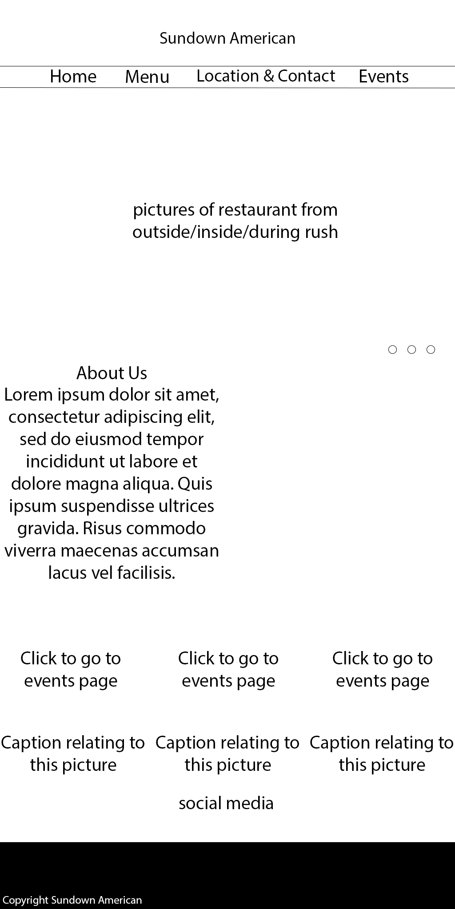
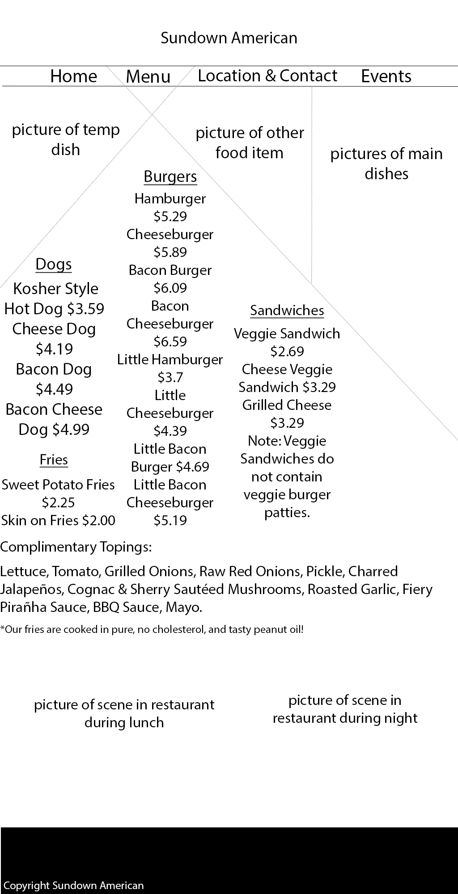
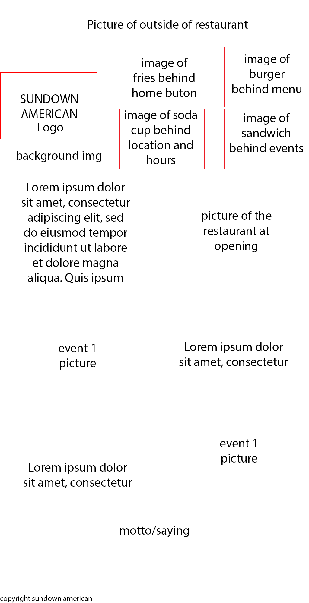
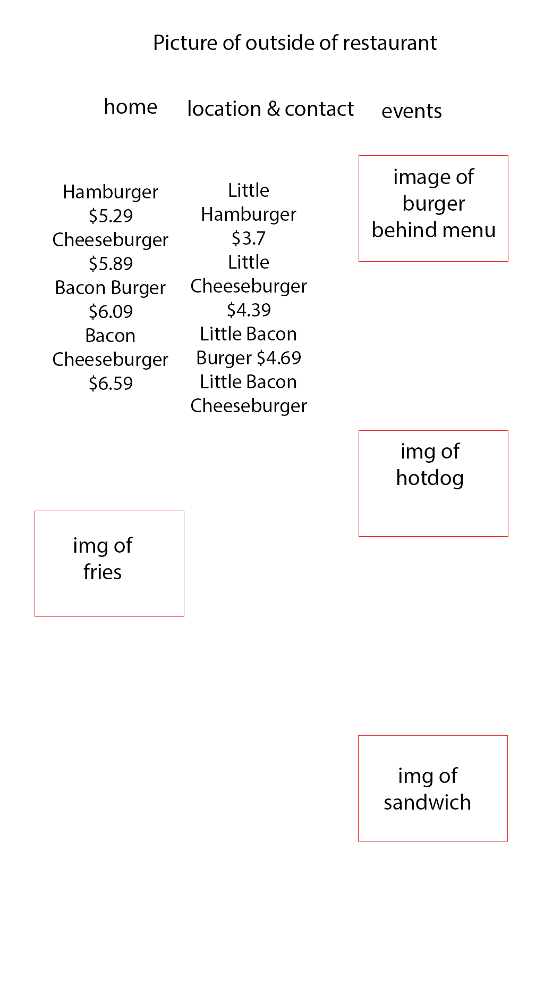

Below are the 1st two sets of images from my photoshop mock ups, showing the bare bones structure of each style of each page. I've decided to make my restaurant beach/island themed (it is called Sun Down Americana)
 In this style, I wanted to give a strong feeling of being no the beach as part of its promotion and appeal. I want to select images that show both the restaurant and the beach. I also want to show that the restaurant has a lot to offer by promoting different events on the main page
 The second style focuses more on a cartoonish style but still uses themes of the sunset, though it I'm not sure how to distinguish them completely while still keeping the theme of the restaurant similar. I want to illustrate more of a playful, relaxed side of things by soft edges and a light color palette. I also want the images to reflect certain part of the restaurants that makes the online viewers feel comfortable and welcome.